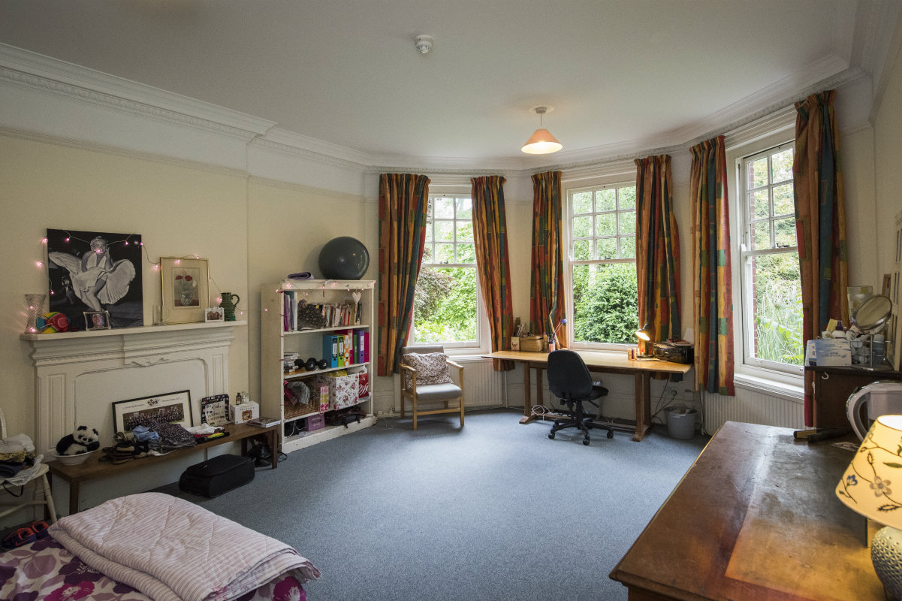
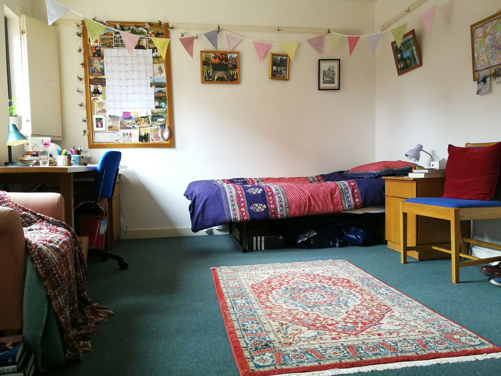

Representing the graduate student community at Newnham College
Click the green icons below for meal bookings & maintenance requests.
© Newnham MCR 2018
At Newnham we have 5 graduate houses and 2 buildings of graduate flats all either on the main college property or immediately adjacent. The houses are turn-of-the-century properties which have been converted from family homes (Whitstead, Holly Cottage, 2 Wordsworth Grove, Carmefield and Eva Smith). Both buildings of flats have been recently renovated or converted, with the Rosalind Franklin Building being the newest construction but Grange Gardens flats are the newest addition to the graduate housing portfolio being renovated and opened in Michaelmas 2016. Depending on the property there will be a variety of house/flatmates you will be sharing common areas and facilities with. All kitchens, living/dining rooms, laundries, bathrooms and gardens are shared spaces, currently there are no ensuite rooms for graduates. If you need an accessible room or require a family flat there are a limited number of these available for both undergraduates and graduates so please talk to your Tutor (if you’re a current student) or contact the tutorial office directly. All rooms are equipped as study bedrooms with a bed (single or double (DOUBLE BEDS COMING VERY SOON) depending on your rent band and house - ask the tutorial office for more information), desk and desk chair, lamp, a dresser and wardrobe/cupboard. Most rooms will have other items of antique furniture but this is unique to each room. Some will have a mirror, but we suggest you bring/buy your own, especially if you would like a longer length (not face) mirror. Bluetac and other similar hanging adhesives or anything which might damage the walls are not allowed in your rooms, but there are picture rails and college provide a few picture hooks to get you started. The kitchens vary on the size and type of property but fridges, a freezer, hobs (stove/hot plate) and microwaves are provided by college. Most will have accumulated other small appliances such as kettles and toasters, which the MCR are currently working on standardising across properties. For more information about other items to bring see our What To Bring page and the Freshers Handbook.
Rents for College rooms fall into three bands and are reviewed annually. Band A is the most expensive and includes the majority of rooms in Grange Gardens. The rest of the rooms fall into bands B or C according to size and/or amenities. Rent includes heat, hot water, gas for cooking, electric, lighting and wifi. Rent is paid termly, in advance. Graduate room licences run from 30th September 2017 – 20th September 2018. Students can leave accommodation at the end of their course (if this is earlier than licence end date). Graduate Rents and Charges for 2018-19 Band A = £153.94 per week Band B = £145.17 per week Band C = £126.89 per week
Newnham College also charge a Kitchen Fixed Charge (KFC) to cover the costs of facilities in the graduate houses, the subsidised buttery (cafeteria), and the College linen service. Students who “live out” (not in College accommodation) do not pay KFC but starting in Michaelmas 2018 they will pay a small food subsidy for the buttery and formal halls, as well as an opt-in payment for the gym facilities.
Full time students are not liable to pay the local property tax. Students living in College will not have to apply for any type of exemption. Students living outside College are likely to need a confirmation letter for council tax exemption. Students must have updated their address on Camsis before requesting a letter. Please email the Tutorial Office.
Part of rent is the hiring of a cleaner for each property. Students are responsible for keeping their own rooms clean . Vacuum cleaners are available in each graduate house for students to clean their rooms. The college cleaners keep all the communal areas tidy , but they are not responsible for doing the washing-up, taking the kitchen rubbish out or reporting broken college equipment (e.g., washing-machines). A list of their duties is posted in your kitchen. If there are any problems, contact your House Rep.
Graduate Houses (except RFB and Grange Gardens which have skips) participate in the Cambridge City Council recycling scheme. There are boxes for glass and plastic bottles, cans and newspapers for recycling; there is a green bin for cardboard and organic waste (i.e. waste that decomposes naturally) outside your house. For information on what to put in the available bins and boxes and other recycling information, see this RFB residents should collect the recycling items and bring them to the bins in the college premises (search for available maps with the recycling points in your kitchen). Paper can be recycled in a bin in the Porter's Lodge/Post room and in the bins in Coach House car park and Clough Hall car park. Cans and glass should be put in available recycling bags in the student kitchens and then brought to the bins in the Coach House car park and Clough Hall car park. Grange Gardens residents should do the same as above, except that the larger bins/skips for normal rubbish and recycling are located on the Grange Gardens premises. It is best if every house introduces a rota with volunteers who will be responsible to bring the cans and glasses to the bins. Batteries and Printer cartridges should be put in the red box in the MCR room or into the green box at the Porters’ lodge.
If a light bulb needs replacing, Housekeeping has some supplies. When Housekeeping is closed, bulbs can also be got from the porters (if you can't reach your ceiling light, get in touch with maintenance (see below). If any college equipment inside your room breaks, report it to Maintenance by filling in a note here ; if any college equipment in common areas breaks, talk to your House Rep before reporting it to make sure the problem has not been reported already (you can also look online if the problem has been reported). A lot of jobs get sorted very quickly and usually very efficiently. Other times you will have to wait longer. Please be patient since Maintenance has to look after all issue for Senior Members, the JCR and the MCR. In all cases, Maintenance works very hard to keep things in college running, so please remember to thank them when you meet them! In case of problems persisting after maintenance attending to them, get in touch with the domestic bursar. You can always include the MCR Committee's accommodation officer on emails reporting such problems. In an emergency (e.g. major flood, smell of gas) get in touch with the Porters directly (ring 35700 from any internal phone, 335700 from any normal line).
College supplies clean linen for all students (although this is optional). The allowance consists of one sheet, one towel and two pillow cases and a duvet cover. New linen can be obtained once a week by students from the Linen Room (in Sidgwick).
Included in the rent is a charge for Portable Appliances Testing (PAT), which is included in your college bill. PAT happens once year, when an electrician will, with due notice, enter your room and test all your portable electrical appliances (hi-fi, computer, hair-dryer etc.) to see if they are safe. Appliances with foreign plugs will be fitted with an English plug; the plug-adaptors that you can buy in most supermarkets do not meet the standards required!
Heating only switches on once the outdoor temperature drops below a certain minimum. If you are cold you can use the electrical heater in your room but be aware that it uses a lot of energy and may thus get quite expensive.

